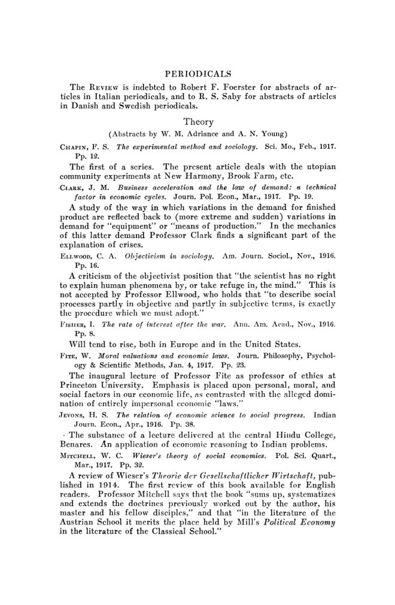

O Federal Reserve aos dois anos, a madeira e as associações de preço
Leitura: 14 min
Willis faz o balanço do Federal Reserve após dois anos e meio; Tosdal descreve as associações de preço aberto; e a edição discute preços da madeira, comercialização, salários reais e crédito ferroviário.


Em 1916, os bancos de reserva federal pagaram todas as despesas e ainda ganharam 5% líquidos sobre o capital. Para H. Parker Willis, que abre a edição de junho de 1917, o número deveria encerrar a discussão sobre se o novo sistema podia pagar-se. A pergunta que ele faz é outra: depois de dois anos e meio, e em condições distorcidas pela guerra europeia, o Federal Reserve mudou de fato o funcionamento dos bancos americanos?
A edição tem seis artigos. Além de Willis, George A. Stephens discute um estudo sobre os preços da madeira; L. D. H. Weld classifica as funções da comercialização; F. W. Jones revisa um índice de salários reais; H. R. Tosdal descreve as associações de preço aberto entre fabricantes; e Arthur S. Dewing examina as obrigações garantidas por material rodante ferroviário. Três temas atravessam o conjunto: o crédito, a informação de mercado e o que está por trás de um preço ou de um índice. Seguem-se resenhas, documentos, resumos de periódicos, a décima quarta lista de teses de doutorado em andamento e notas.
O que o Federal Reserve tinha feito em dois anos e meio?
H. Parker Willis · “What the Federal Reserve System Has Done” · pp. 269–288
Willis avisa que o período é curto e anormal. Os bancos existiam tecnicamente havia cerca de trinta meses, mas operavam plenamente havia de dezoito meses a dois anos, e a guerra alterara o comércio exterior e o sistema bancário. O julgamento só pode ser comparativo, contra o que teria acontecido sem os bancos de reserva. No sentido superficial, o sucesso lhe parece indiscutível: os bancos funcionaram sem as interferências políticas temidas, a Federal Reserve Board custava menos de US$ 220.000 por ano, e a moeda fornecida foi abundante, o que resolveu a questão da moeda de emergência.
A objeção principal à lei era o modelo regional, com doze bancos em vez de um banco central com filiais. Willis responde que os bancos operaram como unidade, com taxas de desconto semelhantes, e que os do Sul aliviaram o aperto de crédito da época de movimentar as safras. Um banco central teria economizado pouco, porque precisaria de filiais quase tão caras, e os bancos regionais ficaram mais próximos de suas comunidades.
O teste mais difícil era reformar o papel comercial, dominado pela nota de assinatura única. O aceite comercial ainda era insignificante no mercado de Nova York; o aceite bancário avançou mais, e Willis estima o total entre US$ 250 milhões e US$ 300 milhões. Mas a Board permitiu renovar aceites dentro de linhas de crédito, e talvez metade deles fosse desse tipo não comercial, usado no financiamento de fornecimentos a governos estrangeiros.
Houve progresso na compensação de cheques ao par e na transferência das reservas, feita sem choque. Faltavam, para Willis, a atuação dos bancos americanos no exterior e, sobretudo, a incorporação do sistema à vida dos negócios, como instrumento permanente, e não só de emergência.
Por que a madeira subia mais que os outros preços?
George A. Stephens (University of Nebraska) · “Determinants of Lumber Prices” · pp. 289–305
Stephens parte de um estudo recente de Wilson Compton sobre a organização da indústria madeireira, cujo valor de produção, em 1909, só era superado pelo de duas outras indústrias, e cujos donos pediam alívio à Federal Trade Commission em audiências públicas. Segundo Compton, de 1880 a 1897 a madeira subiu fortemente em relação aos preços gerais e, depois de 1897, subiu mais depressa que eles. O método do estudo atribui a fatores gerais, como a moeda, o que é comum às duas curvas e procura isolar as causas peculiares à madeira.
Stephens questiona o método: nenhuma influência, nem a moeda, afeta todos os preços por igual, e não se pode repartir a diferença entre as curvas em parcelas atribuíveis a cada causa. Contesta também o peso pequeno dado ao trabalho. Os salários são o maior item do custo de fabricação da madeira, e, mesmo crescendo no ritmo dos demais setores, pesariam mais nele. Sobre o transporte, argumenta que uma queda geral de fretes não chegaria inteira ao preço da madeira: parte iria para o preço da madeira em pé.
Compton explica a alta relativa pelo esgotamento das reservas mais acessíveis. Stephens aceita o fator, mas o desloca. O esgotamento só afeta o preço por meio das avaliações dos donos de madeira, e a capacidade financeira de reter a oferta, própria dos grandes proprietários, eleva essas avaliações. A concentração, que aponta para o monopólio futuro, já pesa nos preços presentes.
A conclusão de Stephens é que as dificuldades da indústria antes da guerra e a instabilidade dos preços vinham da especulação com madeira em pé. A alta paga pelo consumidor ia para o dono original da madeira; quando os preços quebravam, a perda recaía sobre o madeireiro, não como fabricante, mas como especulador.
Dá para eliminar o intermediário?
L. D. H. Weld (Sheffield Scientific School) · “Marketing Functions and Mercantile Organization” · pp. 306–318
Weld prefere falar em funções de comercialização, e não em funções do intermediário, porque elas nem sempre são exercidas por intermediários independentes: o fabricante que vende em lojas próprias é seu próprio intermediário, e o consumidor também cumpre parte delas. Quem fala em eliminar o intermediário esquece que as funções continuam a ter de ser feitas, e a classificação delas é, para ele, a base de qualquer estudo da máquina de comercialização.
Ele propõe sete funções, com dívida declarada a A. W. Shaw: reunir, armazenar, assumir riscos, financiar, rearranjar, vender e transportar; a contabilidade e a administração do escritório seriam incidentais a elas. Reunir é buscar fontes e estudar o mercado, como fazem os compradores que atacadistas de Chicago mantinham em Nova York. Armazenar é manter estoques em pontos convenientes, função que cada elo tenta passar ao seguinte: o varejista compra pouco e com frequência, e o atacadista precisa ficar perto dele.
Vender exige propaganda e vendedores, e muitas tentativas de reduzir custos buscaram justamente cortar os salários dos vendedores: as casas de reembolso postal, as compras por telefone dos sindicatos de farmacêuticos, as máquinas automáticas. A entrega em domicílio, que algumas lojas levavam a um grau quase absurdo, é para Weld uma questão de saber se o consumidor quer fazê-la ou pagar por ela.
A organização de cada comércio, diz Weld, depende de como essas funções se dividem entre intermediários ou se integram nas mãos de poucos, ou do próprio fabricante, que tendia a assumir cada vez mais delas. Quando o fabricante não exerce nenhuma delas, recorre a um comissário, como no comércio têxtil, a um agente, como no de ferragens, ou a um corretor, como no de açúcar, que barateia a venda ao reunir a produção de várias fábricas. Nos produtos agrícolas, perecíveis, sazonais, pouco padronizados e de pequenos produtores, há mais especialização: o recebedor atacadista reúne, armazena e financia, e o jobber separa, vende e entrega. A lista serve ainda ao pesquisador como roteiro de perguntas a qualquer tipo de comerciante.
Os salários reais tinham caído tanto assim?
F. W. Jones (Columbia University) · “Real Wages in Recent Years” · pp. 319–330
Jones revisa um artigo de I. M. Rubinow, publicado na revista em dezembro de 1914, que estendeu até 1912 a série de salários reais do Bureau of Labor. O problema estava nos preços. Em 1908, o Bureau parou de publicar dados de preços no varejo e de salários e, ao retomá-los em 1912, passou a cobrir só 15 alimentos em cerca de 39 cidades, em vez de 30 artigos em 68 localidades.
O próprio Rubinow notara que, até 1907, seu índice de salários reais era mais sombrio que o oficial e que a diferença vinha quase toda dos preços dos alimentos. Jones testa duas explicações. Comparando alguns artigos calculados pelos métodos antigo e novo, mostra que o método não muda os resultados de modo significativo. Calcula então um índice dos 15 artigos omitidos, como café, chá, melaço, arroz e carne salgada, e verifica que, por volta de 1897, quando a série nova começa a subir acima da antiga, a dos omitidos cai abaixo dela no mesmo ritmo.
A conclusão é que a seleção de artigos explica a diferença e que a série nova exagera a alta. Jones mantém a série antiga até 1907, prolonga-a em paralelo à nova e recalcula os salários reais de 1890 a 1912. Em 1912, seu índice de salário real semanal fica em 88,4, contra 85,3 no cálculo de Rubinow.
O quadro, diz Jones, é menos sombrio, mas não dá ao assalariado motivo para celebrar, e a ideia de que os pobres tinham subido junto com os ricos não encontra base nos números. Ele ressalva que os dados são de salários em tempo integral, sem informação sobre o desemprego.
Pode-se trocar informação sobre preços sem combinar preços?
H. R. Tosdal (Boston University) · “Open Price Associations” · pp. 331–352
Tosdal descreve um movimento recente entre fabricantes americanos. Ao contrário da manutenção de preços, que fixa preços para transações futuras, o plano de preço aberto não propõe nada sobre os preços, exceto que sejam feitos com conhecimento de causa. Cada fabricante fixa e muda o próprio preço, mas recebe dos concorrentes informações precisas sobre preços, quantidades, estoques, embarques e descontos. O nome ganhou destaque em 1912 com The New Competition, do advogado de Chicago Arthur Jerome Eddy.
O plano se espalhara por têxteis, madeira, aço, couro, moinhos, amianto, sal e óptica. A National Association of Finishers of Cotton Fabrics reuniu cerca de 35 firmas de acabamento em 1914; a Hardwood Manufacturers Association adotou o plano por inteiro em 1º de março de 1917; a Bridge Builders' and Structural Society funcionava desde maio de 1911.
O plano da Hardwood Manufacturers Association propunha “tornar a concorrência aberta e franca, em vez de secreta e oculta”. (“to make competition open and aboveboard instead of secret and concealed”)
O centro do plano é o sistema de relatórios. Em obras por contrato, cada membro manda ao secretário cópia de cada proposta, e os concorrentes à mesma obra veem as dos outros e podem revisar as suas. Na venda corrente de mercadorias, os membros enviam cópias de pedidos ou faturas, e o secretário distribui resumos, às vezes sem o nome do comprador e com o do vendedor em código. A única penalidade por não informar é deixar de receber informação.
A legalidade ainda não fora decidida. A sentença do caso da Steel Corporation, ao tratar dos jantares de Gary, admitiu a troca de informações e implicitamente distinguiu preços passados de futuros. Para reduzir o risco de que a conversa passasse aos preços futuros, muitas associações mantinham um advogado em todas as reuniões. Tosdal conclui que o plano tende a estabilizar preços e parece legal e economicamente desejável, mas é especialmente suscetível de abuso, e que só a experiência dirá se as vantagens superam os riscos.
Por que os credores dos vagões eram pagos primeiro?
Arthur S. Dewing · “Railroad Equipment Obligations” · pp. 353–376
Dewing parte de uma constatação: a expansão das ferrovias era mais um problema financeiro que técnico. Sem poder crescer só com as receitas, a menos que cobrassem tarifas excessivas, elas precisavam disputar a poupança com outras empresas. Um dos instrumentos criados para isso foi a obrigação garantida por equipamento: um empréstimo com garantia direta sobre um lote específico de material rodante, bem móvel e de depreciação rápida.
Essas obrigações podiam ser títulos, certificados de participação num contrato de compra de equipamento ou cotas de uma associação. O primeiro caso semelhante registrado é de 1845, com barcaças da Schuylkill Navigation Company; o modelo moderno vem do Railroad Car Trust of Philadelphia, de 1868. Como os tribunais da Pensilvânia não aceitavam a venda condicional como base da garantia, os advogados mantiveram a propriedade do equipamento com um fiduciário até o pagamento integral, o chamado plano de Filadélfia, que Dewing considera a forma mais forte.
Nascidas para ferrovias novas ou empobrecidas, elas passaram a ser usadas pelas mais fortes, porque permitiam tomar mais barato que as hipotecas gerais. Em regra, o custo do equipamento superava em cerca de 10% a emissão, e a dívida era amortizada em séries, de modo que a margem de segurança resistisse à depreciação.
Nas reorganizações, os detentores quase nunca perderam: só em dois casos tiveram de tomar e revender o equipamento, e mesmo então sem prejuízo. A explicação está no valor de uso. O credor hipotecário não pode retirar a linha da jurisdição do tribunal; o dono dos vagões pode retirá-los e parar a ferrovia, que não opera sem eles.
“É essa necessidade de uso que faz do material rodante uma base tão sólida de crédito”, conclui Dewing. (“It is this necessity of its use that makes the rolling stock so substantial a basis for credit.”)
O que mais há na edição?
As resenhas, organizadas por área, incluem Distributive Justice, de John A. Ryan, por J. E. Le Rossignol; The Mississippi Valley in British Politics, de Clarence Walworth Alvord, por Amelia C. Ford; History of Manufactures in the United States, 1607–1860, de Victor S. Clark, por Thomas W. Page; Agricultural Economics, de Edwin G. Nourse, por Percy Wells Bidwell; e Government Telephones, de James Mavor, por Homer B. Vanderblue. Em Documentos, John Bauer comenta a decisão do caso Brooklyn Edison e William A. Rawles, o estudo da comissão de tributação de Pittsburgh. As notas registram que o antigo departamento de economia e sociologia da Carnegie Institution deu lugar a um Board of Research Associates in American Economic History e listam os nomeados para a Tariff Commission federal, entre eles F. W. Taussig.
Na minha leitura
Na minha leitura, os seis artigos tratam da informação que está, ou não está, por trás de um número. Willis mostra que o volume de aceites bancários escondia renovações sem lastro comercial; Jones, que um índice de preços dependia da escolha dos artigos; Stephens, que a diferença entre duas curvas de preço não se reparte entre causas; Tosdal, que preços passados conhecidos por todos podem estabilizar um mercado ou servir de fachada para combinar os futuros.
Weld e Dewing completam o quadro com a estrutura que fica entre o produtor e o preço final, ou entre o credor e a garantia. Num caso, as funções da comercialização não desaparecem quando se elimina o intermediário; no outro, a força de um crédito vem menos do valor contábil do bem do que da necessidade que o devedor tem dele.
Glossário
- Redesconto
- empréstimo do banco de reserva a um banco membro, com títulos que este já descontou como garantia.
- Aceite bancário
- letra de câmbio aceita por um banco, que assume o pagamento no vencimento.
- Aceite comercial (trade acceptance)
- letra sacada pelo vendedor contra o comprador de mercadorias e aceita por este.
- Operações de mercado aberto
- compra e venda de títulos pelo banco de reserva por iniciativa própria, fora do redesconto.
- Madeira em pé (stumpage)
- árvores ainda não cortadas, vendidas pelo direito de corte.
- Jobber
- atacadista que compra em lotes e revende em pequenas quantidades ao varejo.
- Preço aberto
- política de troca, entre concorrentes, de informações sobre preços e negócios já realizados.
- Manutenção de preços
- fixação pelo fabricante do preço de revenda de seus produtos.
- Obrigação de equipamento
- empréstimo garantido diretamente por um lote de material rodante ferroviário.
- Plano de Filadélfia
- forma em que um fiduciário mantém a propriedade do equipamento, arrendado à ferrovia, até o pagamento integral.
Artigos (6)
- What the Federal Reserve System Has Done — H. Parker Willis (pp. 269–288) · resenha acima · comentário completo · JSTOR
- Determinants of Lumber Prices — George A. Stephens (University of Nebraska) (pp. 289–305) · resenha acima · JSTOR
- Marketing Functions and Mercantile Organization — L. D. H. Weld (Sheffield Scientific School) (pp. 306–318) · resenha acima · JSTOR
- Real Wages in Recent Years — F. W. Jones (Columbia University) (pp. 319–330) · resenha acima · JSTOR
- Open Price Associations — H. R. Tosdal (Boston University) (pp. 331–352) · resenha acima · comentário completo · JSTOR
- Railroad Equipment Obligations — Arthur S. Dewing (pp. 353–376) · resenha acima · JSTOR
Resenhas (15)
- John A. Ryan, Distributive Justice. The Right and Wrong of our Present Distribution of Wealth — J. E. Le Rossignol (pp. 377–381). Resenha de J. E. Le Rossignol. JSTOR
- Clarence Walworth Alvord, The Mississippi Valley in British Politics — Amelia C. Ford (pp. 382–384). Resenha de Amelia C. Ford. JSTOR
- James A. B. Scherer, Cotton as a World Power. A Study in the Economic Interpretation of History — Ernest L. Bogart (pp. 384–385). Resenha de Ernest L. Bogart. JSTOR
- Edwin G. Nourse, Agricultural Economics — Percy Wells Bidwell (pp. 387–389). Resenha de Percy Wells Bidwell. JSTOR
- Victor S. Clark, History of Manufactures in the United States, 1607–1860 — Thomas W. Page (pp. 390–394). Resenha de Thomas W. Page. JSTOR
- Maxwell Ferguson, State Regulation of Railroads in the South — Lindsay Rogers (pp. 394–396). Resenha de Lindsay Rogers. JSTOR
- Chester Lloyd Jones, Caribbean Interests of the United States — J. F. Fowler (pp. 397–400). Resenha de J. F. Fowler. JSTOR
- Hastings Lyon, Corporation Finance. Distributing Securities, Reorganization — H. R. Tosdal (pp. 405–406). Resenha de H. R. Tosdal. JSTOR
- James Mavor, Government Telephones — Homer B. Vanderblue (pp. 406–408). Resenha de Homer B. Vanderblue. JSTOR
- Edith Abbott e Sophonisba P. Breckinridge, Truancy and Non-Attendance in the Chicago Schools — Helen L. Sumner (pp. 409–411). Resenha de Helen L. Sumner. JSTOR
- Yetta Scheftel, The Taxation of Land Value; a Study of Certain Discriminatory Taxes on Land — Arthur N. Young (pp. 415–416). Resenha de Arthur N. Young. JSTOR
- Santiago Alba, Un Programa Economico y Financiero — Julius Klein (pp. 417–418). Resenha de Julius Klein. JSTOR
- John M. Gillette, Constructive Rural Sociology — T. R. Snavely (pp. 423–424). Resenha de T. R. Snavely. JSTOR
- William English Walling, J. G. Phelps Stokes, Jessie Wallace Hughan e Harry W. Laidler (orgs.), The Socialism of To-Day — Leon Ardzrooni (pp. 432–433). Resenha de Leon Ardzrooni. JSTOR
- A. W. Madsen, The State as Manufacturer and Trader — Simon Litman (pp. 434–435). Resenha de Simon Litman. JSTOR
Novos livros (17)
- New Books (pp. 381–382). Lista de livros recentes da seção de obras gerais, teoria e sua história, com notas breves, entre elas sobre a nova edição da história da economia política de J. K. Ingram. JSTOR
- New Books (pp. 385–387). Lista de livros recentes da seção de história econômica e geografia, com notas breves. JSTOR
- New Books (pp. 389–390). Lista de livros recentes da seção de agricultura, mineração, florestas e pesca, com notas breves. JSTOR
- New Books (pp. 394). Lista de livros recentes da seção de indústrias manufatureiras. JSTOR
- New Books (pp. 396–397). Lista de livros recentes da seção de transportes e comunicações, com notas breves, entre elas sobre a seleção de casos da lei de comércio interestadual de F. Frankfurter. JSTOR
- New Books (pp. 400–401). Lista de livros recentes da seção de comércio e crises comerciais. JSTOR
- New Books (pp. 401–405). Lista de livros recentes das seções de comércio e de contabilidade, métodos de negócio, investimentos e bolsas, com notas breves. JSTOR
- New Books (pp. 408–409). Lista de livros recentes da seção de capital e organização capitalista. JSTOR
- New Books (pp. 411–412). Lista de livros recentes da seção de trabalho e organizações trabalhistas. JSTOR
- New Books (pp. 412–414). Lista de livros recentes das seções de trabalho e de moeda, preços, crédito e bancos. JSTOR
- New Books (pp. 418–421). Lista de livros recentes da seção de finanças públicas, tributação e tarifas, com notas breves. JSTOR
- New Books (pp. 421–423). Lista de livros recentes da seção de população e migração. JSTOR
- New Books (pp. 424–430). Lista de livros recentes da seção de problemas sociais e reformas, com notas breves. JSTOR
- New Books (pp. 430–432). Lista de livros recentes da seção de seguros e pensões. JSTOR
- New Books (pp. 432). Lista de livros recentes da seção de pauperismo e caridade. JSTOR
- New Books (pp. 435–436). Lista de livros recentes da seção de socialismo e empresas cooperativas. JSTOR
- New Books (pp. 436). Lista de livros recentes da seção de estatística. JSTOR
Documentos, periódicos e notas (4)
- Documents, Reports, and Legislation — John Bauer, William A. Rawles e redação (pp. 437–450). Resumos de documentos oficiais, com comentários de John Bauer sobre a decisão do caso Brooklyn Edison e de William A. Rawles sobre o estudo da comissão de tributação de Pittsburgh. JSTOR
- Periodicals — redação e colaboradores (pp. 451–484). Resumos de artigos de periódicos americanos e estrangeiros, por área. JSTOR
- Fourteenth List of Doctoral Dissertations in Political Economy in Progress in American Universities and Colleges — redação (pp. 485–499). Décima quarta lista de teses de doutorado em economia política em andamento nas universidades e faculdades americanas, por área. JSTOR
- Notes — redação (pp. 500–508). Notas: novos sócios da associação desde 1º de março de 1917, o Board of Research Associates in American Economic History, os nomeados para a Tariff Commission federal e outras notícias do meio acadêmico. JSTOR
Fontes
- What the Federal Reserve System Has Done (pp. 269–288). JSTOR · Internet Archive (PDF)
- Determinants of Lumber Prices (pp. 289–305). JSTOR · Internet Archive (PDF)
- Marketing Functions and Mercantile Organization (pp. 306–318). JSTOR · Internet Archive (PDF)
- Real Wages in Recent Years (pp. 319–330). JSTOR · Internet Archive (PDF)
- Open Price Associations (pp. 331–352). JSTOR · Internet Archive (PDF)
- Railroad Equipment Obligations (pp. 353–376). JSTOR · Internet Archive (PDF)
- [untitled] The American Economic Review, (1917-06-01), pages 377-381 (pp. 377–381). JSTOR · Internet Archive (PDF)
- New Books (pp. 381–382). JSTOR · Internet Archive (PDF)
- [untitled] The American Economic Review, (1917-06-01), pages 382-384 (pp. 382–384). JSTOR · Internet Archive (PDF)
- [untitled] The American Economic Review, (1917-06-01), pages 384-385 (pp. 384–385). JSTOR · Internet Archive (PDF)
- New Books (pp. 385–387). JSTOR · Internet Archive (PDF)
- [untitled] The American Economic Review, (1917-06-01), pages 387-389 (pp. 387–389). JSTOR · Internet Archive (PDF)
- New Books (pp. 389–390). JSTOR · Internet Archive (PDF)
- [untitled] The American Economic Review, (1917-06-01), pages 390-394 (pp. 390–394). JSTOR · Internet Archive (PDF)
- New Books (pp. 394). JSTOR · Internet Archive (PDF)
- [untitled] The American Economic Review, (1917-06-01), pages 394-396 (pp. 394–396). JSTOR · Internet Archive (PDF)
- New Books (pp. 396–397). JSTOR · Internet Archive (PDF)
- [untitled] The American Economic Review, (1917-06-01), pages 397-400 (pp. 397–400). JSTOR · Internet Archive (PDF)
- New Books (pp. 400–401). JSTOR · Internet Archive (PDF)
- New Books (pp. 401–405). JSTOR · Internet Archive (PDF)
- [untitled] The American Economic Review, (1917-06-01), pages 405-406 (pp. 405–406). JSTOR · Internet Archive (PDF)
- [untitled] The American Economic Review, (1917-06-01), pages 406-408 (pp. 406–408). JSTOR · Internet Archive (PDF)
- New Books (pp. 408–409). JSTOR · Internet Archive (PDF)
- [untitled] The American Economic Review, (1917-06-01), pages 409-411 (pp. 409–411). JSTOR · Internet Archive (PDF)
- New Books (pp. 411–412). JSTOR · Internet Archive (PDF)
- New Books (pp. 412–414). JSTOR · Internet Archive (PDF)
- [untitled] The American Economic Review, (1917-06-01), pages 415-416 (pp. 415–416). JSTOR · Internet Archive (PDF)
- [untitled] The American Economic Review, (1917-06-01), pages 417-418 (pp. 417–418). JSTOR · Internet Archive (PDF)
- New Books (pp. 418–421). JSTOR · Internet Archive (PDF)
- New Books (pp. 421–423). JSTOR · Internet Archive (PDF)
- [untitled] The American Economic Review, (1917-06-01), pages 423-424 (pp. 423–424). JSTOR · Internet Archive (PDF)
- New Books (pp. 424–430). JSTOR · Internet Archive (PDF)
- New Books (pp. 430–432). JSTOR · Internet Archive (PDF)
- New Books (pp. 432). JSTOR · Internet Archive (PDF)
- [untitled] The American Economic Review, (1917-06-01), pages 432-433 (pp. 432–433). JSTOR · Internet Archive (PDF)
- [untitled] The American Economic Review, (1917-06-01), pages 434-435 (pp. 434–435). JSTOR · Internet Archive (PDF)
- New Books (pp. 435–436). JSTOR · Internet Archive (PDF)
- New Books (pp. 436). JSTOR · Internet Archive (PDF)
- Documents, Reports, and Legislation (pp. 437–450). JSTOR · Internet Archive (PDF)
- Periodicals (pp. 451–484). JSTOR · Internet Archive (PDF)
- Fourteenth List of Doctoral Dissertations in Political Economy in Progress in American Universities and Colleges (pp. 485–499). JSTOR · Internet Archive (PDF)
- Notes (pp. 500–508). JSTOR · Internet Archive (PDF)
- Sumário da edição no JSTOR: The American Economic Review, vol. 7, nº 2.
Documento em domínio público (EUA, publicado antes de 1931), via JSTOR Early Journal Content e Internet Archive. Resumo e comentário do autor deste site, sem afiliação com a American Economic Association. Encontrou um erro? Escreva: a correção é publicada no próprio texto, com data.
← Nº 146 · Columbus, 1916: o ponto de vista nacional, a terra e a guerra Nº 148 · As reservas do Federal Reserve, a escala de Fall River e o Pacífico →